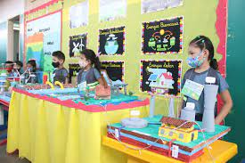

Foi ganhado segundo premio na competição Interscolar
ganhamos com a turma do 7 ano

Um lugar muito aconchegante
Ótima para ler livros
Usado para palestras e apresentações
Nossa escola se empenhou muito para este resultado satisfatório
ganhamos com a experiência de um super foguete
ganhamos com a turma do 7 ano